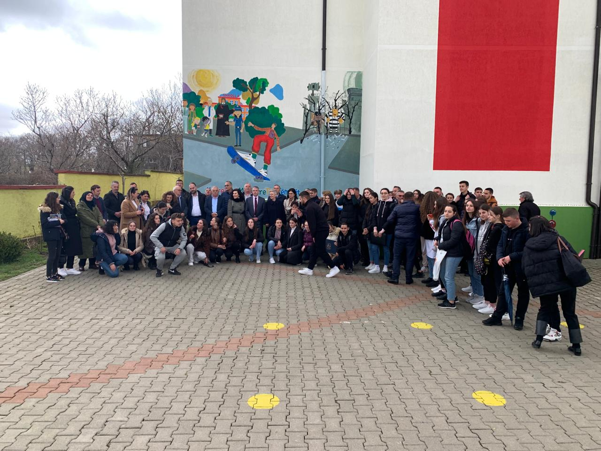
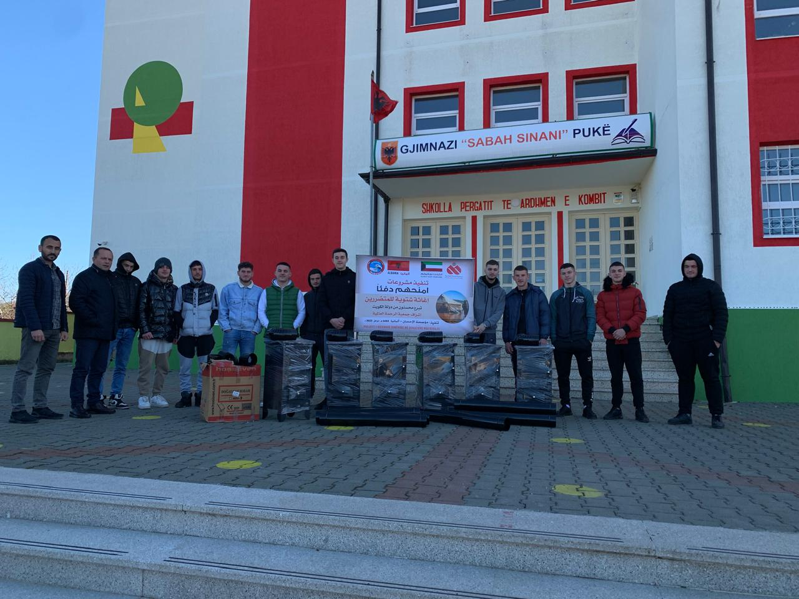
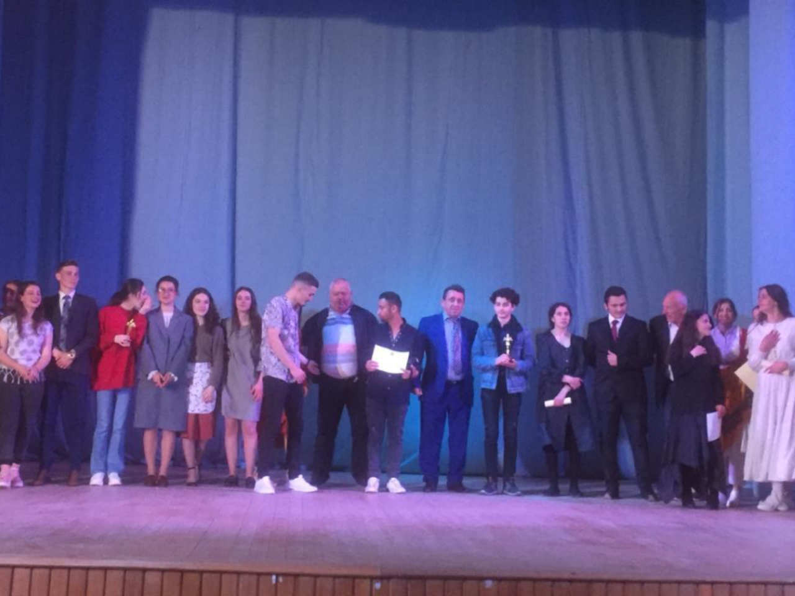

12:50 15/6/2024
"Një ditë në teatrin e shkollës" ishte tema e projektit të realizuar me nxënësit e klasës së XI-B në lëndën e Letërsisë. Nxënësit të ndarë në dy grupe dramatizuan fragmente nga romanet "Katedralja e Parisit" dhe "Xha Gorio". Falënderojmë të gjithë nxënësit,për seriozitetin e treguar, bashkëpunimin shumë të mirë me njëri- tjetrin dhe dëshirën për të dhënë më të mirën e tyre. Teatri është një rreze shpirtërore dhe sociale e kohës së tij.
12:50 29/3/2024
Sipas kalendarit te dale nga KOKSH-it sot me dt. 29. 03. 2024 u zhvilluan ndeshjet per kampionat ne mes 4 shkollave te grupit te dyte
Sipas kalendarit te dale nga KOKSH-it sot me dt. 29. 03. 2024 u zhvilluan ndeshjet per kampionat ne mes 4 shkollave te grupit te dyte
"Ndre Mjeda","Sabah Sinani"
"Sherif Hoxha","Nene Tereza"
Si gjithmone dhe kudo mbeshtetja e prinderve ishte e pranishme edhe ne kete aktivitet sportiv.
Suksese te metejshme!
Suksese te metejshme!
12:50 6/12/2023
📍Në kuadër të 1️⃣6️⃣ Ditëve të Aktivizmit kundër Dhunës me Bazë Gjinore 🚻 (2️⃣5️⃣ Nëntor-1️⃣0️⃣ Dhjetor 2023).🆗, Shërbimi i Kujdesit Shëndetësore Parësor në bashkëpunim me Gjimnazi "Sabah Sinani" Pukë Qendra Komunitare Puke Bashkia Pukë - Faqja Zyrtare
🤝 vazhdon fushatën "Mos dhuno, dhuro dashuri”.
📍Qëllimi i fushatës është të sensibilizojë e ndërgjegjësojë të gjithë komunitetin për të minimizuar dhunën me bazë gjinore, për denoncimin e saj.
• Dhuna ndaj grave është shkelje e të drejtave të njeriut.
• Dhuna ndaj grave është pasojë e diskriminimit ndaj grave, në ligj dhe në praktikë, si
dhe pabarazi e vazhdueshme midis burrave dhe grave.
• Dhuna ndaj grave ndikon dhe pengon përparimin në shumë fusha, duke përfshirë
çrrënjosjen e varfërisë, luftën kundër HIV dhe AIDS, paqen dhe sigurinë.
• Dhuna ndaj grave dhe vajzave nuk është e pashmangshme. Parandalimi është i
mundur dhe thelbësor.
12:50 20/11/2023
Veprimtari ndërgjegjësuese dhe sensibilizuese në Ditën Ndërkombëtare të të Drejtave të Fëmijëve,
12:50 17/10/2023
Ekipi lëndor i Historisë dhe Gjeografisë me drejtuese Zana Gjekaj në kordinim me Klubin e Historjanëve të rinj të shkollës, në kuadër të dy ngjarjeve më të mëdha të popullit tonë,Ditës së Pamvarësisë dhe Ditës së Çlirimit, organizojnë veprimtari në kujtim te ngjarjeve që prodhuan këto ditë.
12:50 11/10/2023
🎀Tetori Roze🎀
Ndërgjegjësim dhe sensibilizim në Gjimnazi "Sabah Sinani" Pukë me stafin dhe nxënësit.
👍🏻 Një gjysëm ore të shpëton jetën, bëj vetkontrollin, bëj mamografinë🎀
👍🏻 Mos i jep shansin kancerit të gjirit 🎀
👍🏻 Bëju hero i jetës tënde 🎀
12:50 3/10/2023
Edukimi fizik i fëmijës është baza për gjithçka tjetër. Pa zbatimin e duhur të higjienës në zhvillimin e fëmijës, pa edukimin fizik dhe sportin e duhur, nuk do të kemi kurrë një brez të shëndetshëm. Në kuadër të “Javës Europiane të Sportit” me moto BeActive shkolla e mesme "Sabah Sinani" organizoi një sërë veprimtarishë organiziar nga bashkepunimi i ekipit lendorë të edukimit fizik dhe të shkencave natyrore.
Sporti eshte vaksina, une jam ilaçi!
12:50 30/5/2023
Poezia fituese e gjimnazit “Sabah Sinani”, në kuadër te projektit "Mendimi im ,Forca ime" kushtuar Gjuhës shqipe, krijuar nga nxënësja,Lurida Hoxha. Na bën të mendojmë se ja vlen sakrifica e brezave të tërë për ta ruajtur dhe trashëguar këtë gjuhë të bukur, kur sheh se ajo sakrificë vlerësohet sot përmes poezish të tilla ,nga nxënës që e duan dhe frymëzohen nga gjuha jone e bukur shqipe.
Gjuhës shqipe
Unë flas shqip e shqip më rreh zemra
Në gegërishte ëmbël më vjen
Si dikur i këndonin kësaj gjuhe
Fishta dhe i madhi Migjen
Si Shiroka e si Ndre Mjeda
Shqipe të ëmbël, të kulluar
Porsi gurgullima e Drinit
dhe qetësia Bunës shtruar
Gjuhë që koha dot se plaku
Nuk e zbehu s’u harrua
Se tingëllonte shumë më bukur
Se çdo gjuhë që ishte e huaj
Se romakë e bizantinë
Se osmanë e më modernë
Gjuhës shqipe fort ju druajtën
Gjuhën shqipe kishin tmerr
Gjuhë që kohën e sfidoi
Me shekuj e mijëvjeçarë
Gjuhë që anekënd kësaj bote
E bashkon çdo shqiptarë.
Pellazgjishte,Ilirishte
Arbërishte,Shqipe sot
Është e lashtë sa vetë bota
E përcjellshim mot më mot!
Lurida Hoxha Klasa 12-A
12:50 22/4/2023
22 Prilli Dita e Tokes .
U realizuan veprimtari sensibilizuese me moton “ Mbroni mjedisin, hapsiren jetike të njerzimit.”
12:50 18/4/2023

Mësuese Zana në një orë mësimi të hapur në lëndën e gjeografisë me klasën e 10-a. Konceptimi metodologjik i orës, strukturimi profesional i saj, tregon se sa lehtë percillen konceptet e reja tek nxënesi. Orë të tilla të krijonë bindjen se mësuesia është mision, jo profesion.
12:50 5/4/2023
Sot u vazhdua me këshillimin e karrierës me maturantët, të cilëvë u shpjeguam edhe një herë për arsyet e heqies së fletë përgjigjeve dhe lehtësirat që i krijon maturantit, mënyrën e zhvillimt të provimeve në salla të mëdha dhe monitorimin e tyre si dhe u sqaruam tre kolonat kryesore mbi të cilat ndërtohet karriera e maturantit: deshirë-mundësi-treg pune. Paisëm nxënësit me fletë palosje përmes të cilave u sqarohen ofertat dhe kriteret e universiteteve të ndryshme.
12:50 29/3/2023
Aktiviteti “Fjala poetike e autoreve pukjane “ i realizuar ne kuader te 75 vjetorit te themelimit te Pallati Kultures Ndue Shyti - Puke . Falenderim te veçante per te gjithe drejtorat e shkollave nen juridiksionin e Bashkise Puke per perkrahjen dhe mbeshtetjen e madhe qe japin ndaj artistave te rinj. Faleminderit mesuesve te letersise dhe sektorit te bibliotekes Puke znj.Marjana Alia per realizimin e ketij aktiviteti. Frymes poetike te autoreve pukjane i dhane akoma dhe me shume ngjyra nxenesit e çdo shkolle qe shumica prej tyre interpretuan per here te pare me plot emocion. U vleresuan me çmime nga juria e perbere nga z.Fran Vukaj -Regjisor ,znj.Oreola Oreola Bibaj Mbrozi mesuese ne degen Gjuhe Letersi ne Gjimnazin “Sabah Sinani” Puke dhe znj.Marjana Alia specialiste e bibliotekes Puke. Ne çmimin e pare Gjimnazi "Sabah Sinani" Pukë nxenesja Elsa Elezi me poezine “Kam mall nene“ te autorit Riza Tafilaku. Ne çmimin e dyte shkolla “ 8 Dhjetori “ Qelez nxenesja Griselda Topjanasi me poezine “Regjisori aq fatlum “ te autorit Ndrec Mustafa. Ne çmimin e trete shkolla “Mark Jaku” Gojan nxenesja Valentina Ndoci me poezine “Dhime ne shpirt” te autorit Rasim Laçi. Faleminderit gjithashtu Shkolla Ndue Pjetri-Luf , Shkolla e Rrapes, Shkolla Migjeni Pukë, shkolla “Nikoll Lleshi”Gjegjan. Suksese!
12:50 24/3/2023
Nxënësit e gjimnazit “Sabah Sinani” njoftojnë ardhjen e pranverës edhe në Pukë, pasi filluan me përgatitjen e tokës për mbjelljen e kopshtit të shkollës,por dhe filluan me mbjlljen e luleve.
12:50 21/3/2023
“Takim brezash” i kemi quajtur veprimtaritë që po zhvillon institucioni jonë në kuadër të 60-vjetorit të hapjes së tij. Të ftuar special kësaj rradhe ishin: ish-nxënësi i Maturës së parë, ish-drejtuesi i IA-ve, historiani, kryetari i shoqatës së ekoturizmit të rrethit z.Gjovalin Alija; ish-nxënesi i Maturës së parë, koreografi, qytetari i nderit të Bashkisë Pukë z. Riza Hoxha; ish-nxënësi, regjizori, aktori, poeti, publicisti, qytetari i nderit të Bashkisë Pukë z.Fran Vukaj. Ata zhvilluan një bashkbisedim të ngrohtë e miqësor, interesant e me vlera përmes të cilit ndanë me maturantët kujtime e mbresa nga koha kur ishin nxënës të këtij institucioni.Përmes tyre, ata përcollën tek nxënesit rëndësinë e shkollës për formimin intelektual e qytetar të brezit të ri, si dhe rolin e dijes në përcaktimin e vendit të individit në shoqëri. Takimit i dhanë kolorit interpërtimet dhe batutat humoristike me shumë tharm të z. Fran Vukaj. Nxënësit i ndoqën me vëmendje duke u drejtuar pytje herë pas here, çka e bëri këtë bashkëbisedim mjaft interesant.
12:50 18/3/2023

Orë mësimi e hapur me klasen e Xl-A zhvilluar nga mësues Ylli Hadroj në lëndën e matematikës: shumë interesant performimi metodik i mësuesit, por mahnitës dhe interesi i nxënësve. Nga orë të tilla nuk mësojnë vetem nxënesit, por dhe ne vezhguesit. Faleminderit mesues Ylli! Puna që bëni është domethënja e emrit tuaj. Urime!
12:50 16/2/2023
Ishte kënaqësi që sot në shkollën tonë pritëm drejtorin e DRAP Lezhë z.Hasan Muça dhe drejtoreshën e ZVAP Pukë & Fushë-Arrëz zj. Blerina Pema. Ata zhvilluan takim me mësuesit dhe maturantet e shkollës.Në takimin me maturantet, Z.Muça u shpjegoi rëndësinë që kanë për ta ndryshimet në Rregulloren e MSH-së, por në mënyrë të veçàntë e fokusoi bashkëbisedimin e tij në 35 programet e studimit që janë shpallur prioritet kombëtar, programe studimore që lidhen me disa fusha të Shkencave Humane, Mësuesi, Shkenca Natyrore, Matematikë, Statistikë si dhe të gjitha degët e Inxhinierisë që kanë të bëjnë me tokën dhe minierat.
12:50 27/1/2023
Momente Be Active nga shkolla “Sabah Sinani” në Pukë, me mësuese Yllka Çobaj . Koordinator për qytetin e Pukës, Yllka Çobaj.
Koordinator i Beactive school week Altin Birçe.
Projekti financohet nga Komisioni Evropian.
12:50 27/1/2023
Momente Be Active nga shkolla “Sabah Sinani” në Pukë, me mësuese Yllka Çobaj . Koordinator për qytetin e Pukës, Yllka Çobaj.
Koordinator i Beactive school week Altin Birçe.
Projekti financohet nga Komisioni Evropian.
12:50 23/12/2022

Gjimnazistet e “ Sabah Sinanit” bëhën pjesë e panairit PUKA N'Festë, si gur i çmuar i mozaikut festiv të këijj eventi me produkte përgaditur prej tyre.
12:50 8/6/2022
#StopHumantrafficking #EndHumanTrafficking #unicefalbania #unicefprotects #childrensrightsarehumanrights #restorativejustice #juvenilejustice
📣 Të rinjtë Pukianë 👫 , aktivistët e artistët e talentuar, të cilët në kuadër të Drejtësisë Miqësore me Fëmijët, realizuan muralen🎨 “Drejtësia është Miqësore me Ty” dhe minidramën “Besmir”🎬 u mblodhën sëbashku në një takim për të reflektuar dhe gjetur mënyrat për t'u angazhuar më tej.
📣Pas diskutimeve frymëzuese që nxisin edukimin jo formal nga të rinjtë për të rinjtë dhe aktivizmin e tyre në përcjelljen e mesazheve edukative mbi promovimin e të drejtave të fëmijëve u përgatit një plan veprimi për të vazhduar nismën. Në fund të takimit u shpërndanë certifikatat e vlerësimit 🎫 për të rinjtë aktivistë, për angazhimin dhe aktivizmin në aktivitetet ndërgjegjësuese dhe edukuese, si dhe kontributin ekstra kurrikular në promovimin e të drejtave të fëmijëve dhe përcjelljen e mesazheve pozitive drejt qasjes gjithëpërfshirëse të zbatimit të Drejtësisë Miqësore për Fëmijët 👫⚖️ në 📍 Pukë.
📌Ky aktivitet ndërgjegjësues- edukues u realizua si pjesë e ndërhyrjes së projektit “Forcimi i qasjeve ndërdisiplinore në menaxhimin e rasteve të fëmijëve në konflikt dhe kontakt me ligjin”, implementuar në partneritet midis zyrës së UNICEF Albania dhe konsorciumit të organizatave: 🤝 Fondacioni “Zgjidhja e Konflikteve dhe Pajtimi i Mosmarrëveshjeve” AFCR& Albanian Community Centre - Qendra Komunitare.
📌Ndërhyrje që realizohet në kuadër të programit “Transformimi i Përgjigjes Kombëtare ndaj Trafikimit të Qenieve Njerëzore në dhe nga Shqipëria” i cili mbështetet nga qeveria e Mbretërisë së Bashkuar British Embassy Tirana
🤝 Bashkia Pukë
🤝 Gjimnazi "Sabah Sinani" Pukë
🤝 Drejtoria Arsimore Rajonale Lezhe
🤝 Zva Pukë Fushë Arrëz
#Ndalojmëtrafikimin #Bashkëmundemi #StopHumantrafficking #EndHumanTrafficking #bashkëkundërtrafikimittëqenievenjerëzore
12:50 5/4/2022
Kodi penal per te miturit!
Ndergjegjesohu & Informohu nepermjet artit!
Drejtesia do jete miqesore me ty !
Gjimnazi "Sabah Sinani" Pukë Qendra Komunitare Puke Pallati Kultures Ndue Shyti - Puke Albanian Community Centre - Qendra Komunitare
Momente nga provat !
12:50 24/12/2021
Ne nuk mund te bejme dot gjera te medha,por gjera te vogla me dashuri te madhe" Nje dite ndryshe ne Shtepine e te moshuarve Shkoder! Aty ku ka buruar jeta jone dhe e prinderve tane,njerezit qe ne i respektojme per pervojen qe kane,per mesimet qe na japin,per traditat qe na trashegojne.Fale idese ,perkrahjes dhe iniciatives se vajzes pukjane Alda D Mema u dha nje shembull i madh.Grupi Teatror i Gjimnazi "Sabah Sinani" Pukë performuan ne kete mbyllje te vitit ne kete familje te madhe me kenge,valle,poezi dhe pjese teatrale.Faleminderit Alda !Kishim nevoje te perjetonim emocione te tilla,lot,dhe gezim teksa uronim festat e fundvitit gjysherve tane. Shpirti plot....Gezuar!
12:50 4/12/2021
Faleminderit Ema Andrea ! Sot me shume se kurre besoj qe Puka eshte nje shtepi e madhe arti dhe kulture.Gjithcka nis nga iniciativa te vogla...
Krenar per nxenesit e shkolles "Sabah Sinani Puke qe performuan sot per here te pare ne Teatrin Metropol-Tirane.
12:50 1/11/2021
Halloween party 2021 ne Gjimnazin “Sabah Sinan”
12:50 20/10/2021
Kenaqesi e madhe qe sot gjate provave kishim te pranishme aktoren e madhe te teatrit shqiptar Ema Andrea .
Gjithashtu xhiruam ne perlen tone turistike ,Puken,per rendesine e artit dhe boten artistike.
Shihemi te premten me aktivitetin "Mendo,Krijo dhe Performo si nje artist"
Ora 11:00
Faleminderit M.A Multidisciplinary Arts
Gjimnazi "Sabah Sinani" Pukë
12:50 10/10/2021

-Departamenti i Regjizurës së Pallatit të Kulturës “Ndue Shyti “ & Gjimnazi “Sabah Sinani” Pukë gati për muajin e arteve dhe letersisë.
4:52 5/10/2021
Në prag të 100 Vjetorit të Kryqit të Kuq Shqiptar , Kryqi i Kuq Dega Pukë në bashpunim me gjimnazistet e Gjimnazit “Sabah Sinani” organizojnë veprimtari dedikuar kesaj dite.